Project 1 - New Account Fraud
New account fraud is generally defined as fraud that occurs within the first 90 days of an account opening. These accounts are opened with the sole purpose to commit fraud. Typically, criminals wait 30 days or more before making the first transaction, which is often a low dollar amount say $5 - $200 to “test” a company’s fraud detection system, but often it can be much more. For example Verizon reported that new subscriber fraud has gotten so out of hand that (7000 phones stolen a moth) they hat to go to the FC to change regulations in order to put a 60 day lock down on new phones and to help them deal with the spike in losses. While on the surface, 7000 frauds a month doesn’t sound like much until you factor in that the average cost of a cell phone in the US is $528, thats at least $3.6M in real-dollar losses a month.In this project you are going to build a “New Account Registration” model and detector.
< insert video >

Step 1. Define model
To build a model is pretty straight forward, basically we upload a CSV file, map the file’s fields to the model input types, train it, evaluate it and deploy it. The steps are outlined below.
- Name your model project_1_model you can also give it an arbitrary description. We’ll use the name of the model downstream…
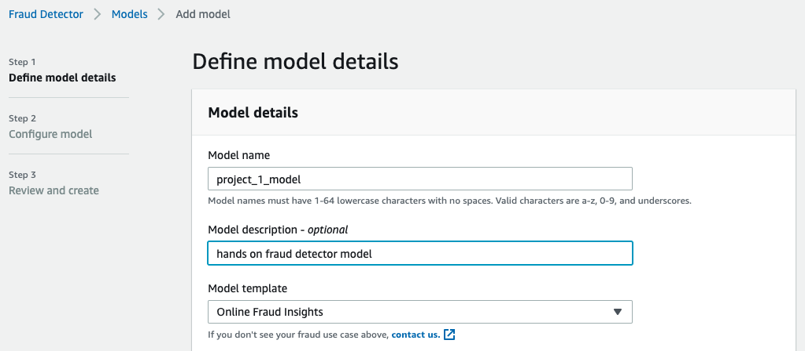
Setup a Data Source
You’ll need to either re-use or create a new IAM role. So that fraud detector can get to your S3 file.
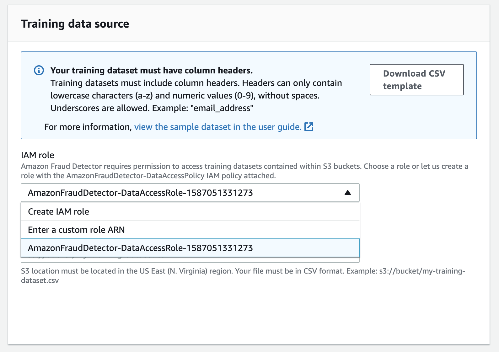
Create an IAM role
Create an IAM role and point it to our S3 bucket hands-on-frauddetector, we created in the beginning.

Training data source
Point your new IAM role to the project 1 training file stored in S3 s3://hands-on-frauddetector/project_1_newaccounts_100k.csv

Step 2. Configure Model
Map File Inputs
Map the CSV file column headers to model inputs. Here you’ll want to make sure that you’ve mapped the file variables to Fraud Detector model inputs. The table below provides the mappings for the project_1_newaccount.csv file.
| Column Header | Model Input |
|---|---|
| user_agent | USERAGENT |
| phone_number | PHONE_NUMBER |
| ip_address | IP_ADDRESS |
| customer_state | BILLING_STATE |
| customer_name | CATEGORICAL |
| customer_postal | BILLING_ZIP |
| email_address | EMAIL_ADDRESS |
| customer_city | BILLING_CITY |
| event_timestamp | EVENT_TIMESTAMP |
Simply select model input mappings.

Map Fraud Label
Map the *is_fraud column to the Fraud Label input.
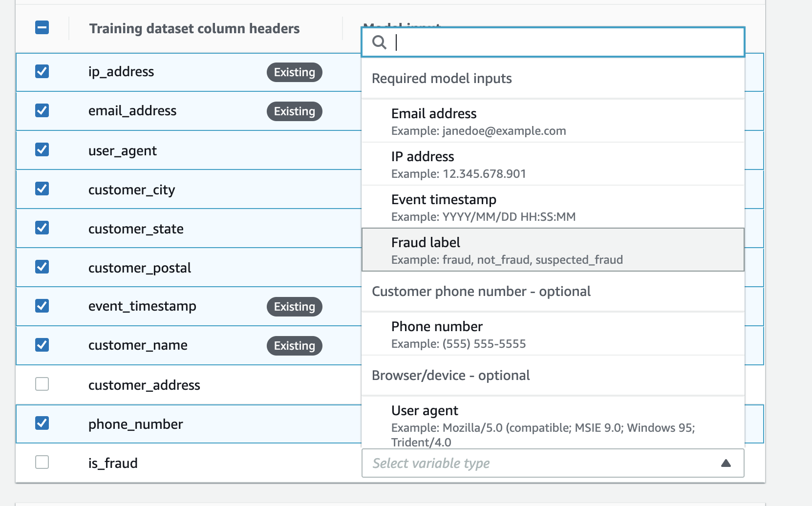
Specify Fraud / Not-Fraud
Fraud labels can often contain more than two values, you just need to identify which values map to fraud and legitimate (i.e. not fraud). In this case our dataset has an indicator “1” meaning fraud and a “0” meaning not-fraud. Multiple label values can be separated with commas. Fraud detector will run a validation check to insure that there are no additional levels found in the label column and will throw a warning if additional levels are found.
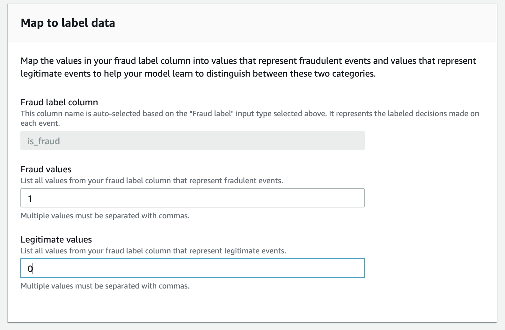
Step 3. Create & Train Model
Model Name & Description

Model Input Mapping

Fraud Label Mapping

Finally, Train Model 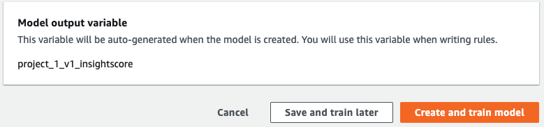
Step 4. Model Training Complete
Fraud detector trains a number of models with different hyper parameters for you behind the scenes. This is why model can take anywhere from 45 minutes to an hour or more depending on number of features and training dataset size. Model training is kicked off in the background so in the console you can monitor training. Once training has completed, you’ll see model performance results in the console.
Here you can see that we have a model with an AUC of 0.98 that is “Ready to deploy” before we get to that however lets dig into the model performance.

Model Overview
Here is a quick summary of the model, when it was trained, last updated and status
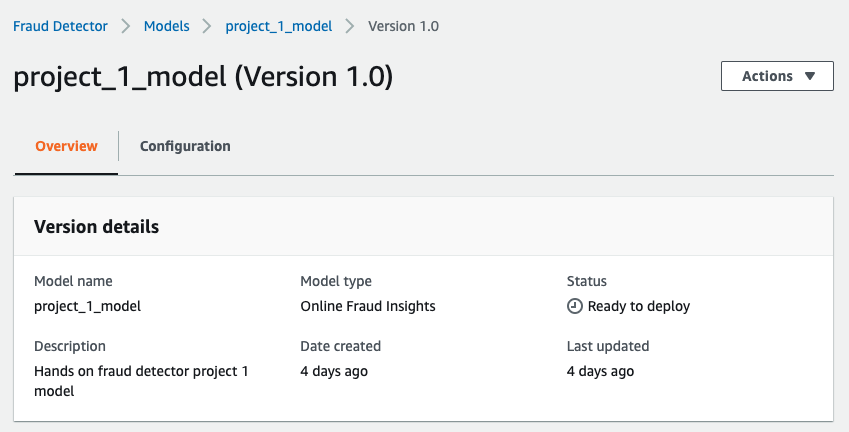
Model Performance
Next we are presented with a measure of the Model’s performance, Area Under Curve or AUC and a suggested score threshold of 500 to separate fraudulent from legitimate events. Based on a score threshold of 500, you would author a rule rule that says IF model score GREATER OR EQUAL TO 500 THEN event is fraud. We’ll dig into these a bit more.
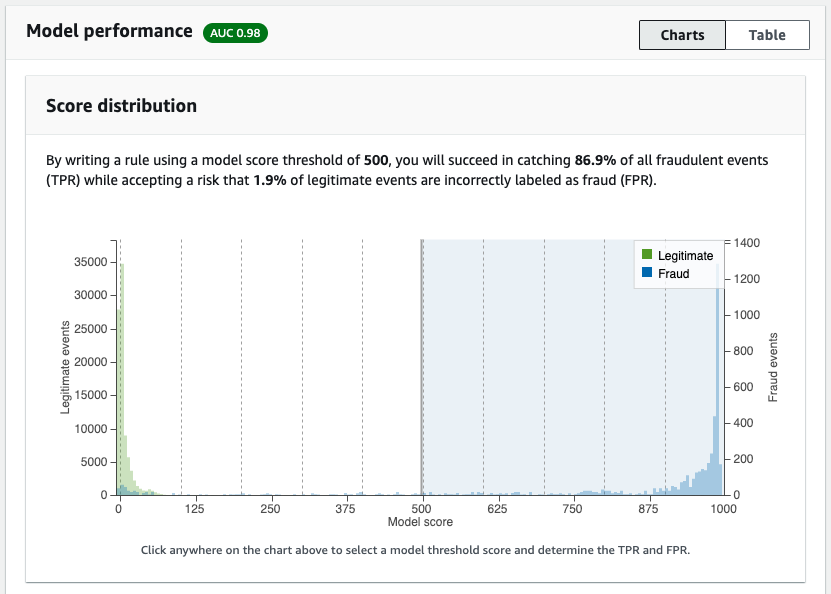
Understanding AUC
AUC is a measure of model performance, think of it as a measure of how well the model separates your data into classes i.e. fraud / not-fraud. It’s often mistaken for accuracy which is simply how often a model is right and wrong. A better way think about AUC is to think of it as the percentage chance that the model is able to distinguish between fraud and not-fraud. For example an AUC of 0.9 essentially means that there is a 90% chance that the model is able to distinguish between Fraud and Not-Fraud. AUC typically ranges between 0.5, essentially a random guess, to 1.0 a model that perfectly distinguishes fraud and legitimate events. As long as the AUC of your model is greater than 0.5 your model is doing better than random chance. That is the model has learned something about how to separate fraud from legitimate events. Of course, a model with a higher AUC is better at distinguishing between fraud and legitimate events, that doesn’t mean a model with say a AUC of 0.7 isn’t good it just means that at the same “operating range” it may not be as good at identifying fraud and not-fraud as a model with a higher AUC.
“Any Model is better than No Model at all” - a data scientist
Score Distribution and Operating Range
Using the interactive Score Distribution chart you can interactively identify a score threshold and see and the resulting expected operating range. Essentially the percentage of fraud caught and false positives created for a specific score threshold.
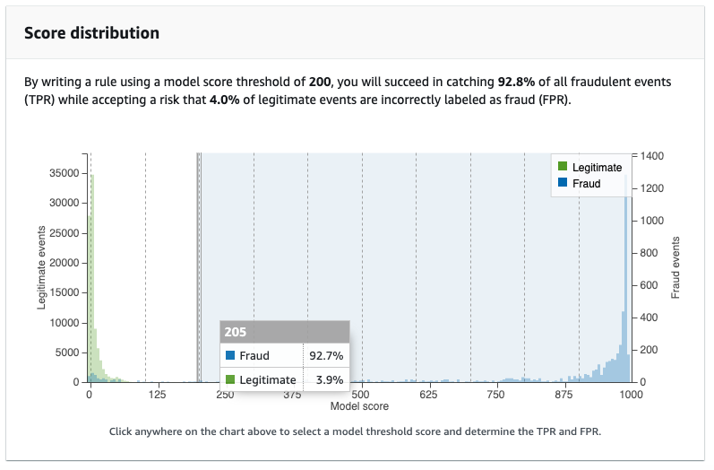
Confusion Matrix
A confusion matrix is a table that describes the expected performance of your model. The confusion matrix itself is relatively simple to understand, but the related terminology can be confusing. First the confusion matrix provides an estimate of expected model performance on 100k events based on the selected score threshold.
Essentially, the score threshold says IF an event’s model score is GREATER THAN OR EQUAL TO the score threshold THEN classify the 4e event as FRAUD, conversely IF it is LESS THAN the score threshold it is classified as LEGIMATE. Confused yet? Based on the score threshold this will determine the expected:
- True Positives (TP) i.e. the number of events correctly identified as FRAUD
- False Positives (FP) i.e. the number of events incorrectly classified as FFAUD that were actually LEGITIMATE
- True Negatives (TN) i.e. the number of events correctly identified as LEGITIMATE
- False Negatives (FN) i.e. the number of FRAUDS incorrectly classified as LEGITIMATE
Note: simply divide these by 100k and you can get the expected rates for each classification.
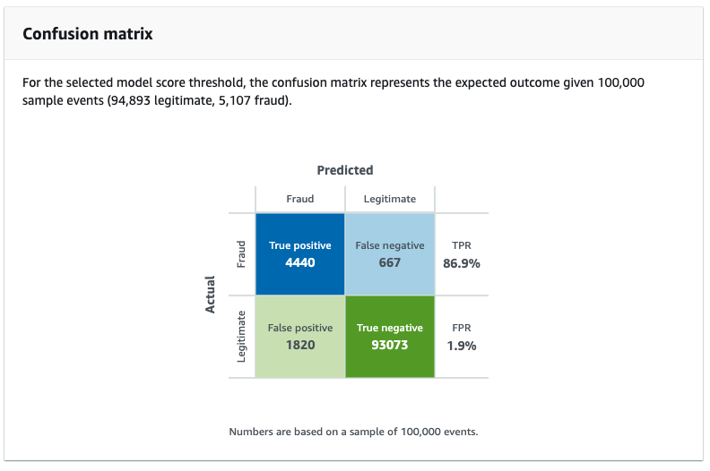
ROC Chart
Advanced users may find the Receiver Operator Characteristic or ROC chart useful. It is simply a different view of score thresholds that highlights the trade off between false positive rates and true positive rates. Where True Positive Rate(TRP) is on the Y-Axis and False Positive Rate(FPR) is on the X-Axis. By choosing a score threshold you are essentially determining the expected TPR and FPR of your model.

Operating Range
Here is another view of “score thresholds” and how they align to True Positive Rate, False Positive Rates and Precision. This table is often helpful when determining an “operating range” for your fraud detection efforts. We recommend balancing the False Positive Rate (FPR) and True Positive Rate(TPR) by identifying a “Score Threshold” that matches your business’s operating appetite for false positives. For example in this case, say our business accepts a 4% FPR, this translates into:
- A rule IF model_insightscore >= 192 THEN “fraud”, you would deploy in a detector
- Expected True Positive Rate of 92%, i.e. 92% of these events that have a score >= 192, are fraud.
- Expected “Precision” of 55%, percent of all fraud found in the data based on that threshold.
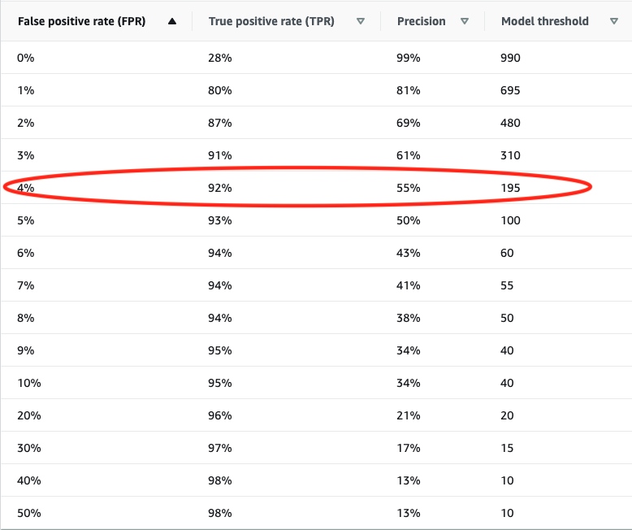
Step 5. Deploy Model
The final step is to deploy your model. This creates a model endpoint and makes the model available to Detectors. It also takes around 5 - 10 minutes to complete, so grab a snack.

Yes you really do want to deploy your model.

Step 6. Create a Detector
A detector is basically a container that ties model(s) and rule(s) together. This is what you deploy to apply your model to new data. We’ll walk through the steps of creating a detector, adding a model, authoring rules, testing our detector then we’ll deploy it and finally, we’ll use python to call the detector’s endpoint with a notebook to make predictions. The steps are outlined below
- name your detector project_1_detector, you can also give it an arbitrary description

Add a Model
Here we are going to add our project_1_model to the detector. Models produce an “insightscore” field, this contains the “score” that the event is fraud or legitimate. In this case our model will create a field called project_1_model_insightscore which we can reference when we author rules. Scores range between 0 (not risky) and 1000 (most risky), you can see the naming convention is simply MODEL_NAME + "_insightscore".
Note: Models are “optional” and we have seen cases where a “rule-only” detector can be effective.
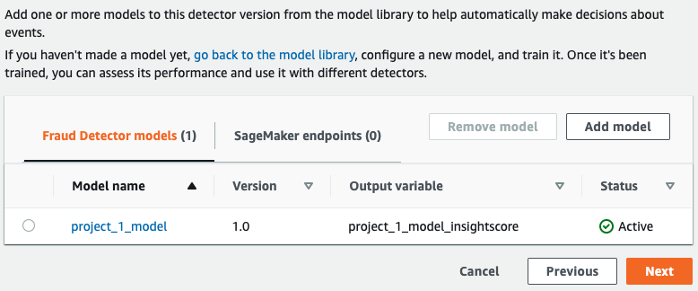
Models have to be deployed to add them to a detector. Here we select the project_1_model version 1.0 of our model.
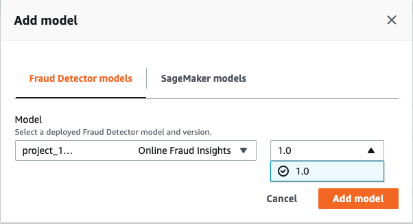
Author Rules
We are going to create 4 rules and 4 outcomes (actions) for our detector. I’ll walk you through the first rule then you’ll create the next three yourself. The first thing you’ll notice is that your model produces a new outcome called “insightscore”, this is the fraud score from your model.
A Note on OUTCOMES. Rules can have 1 or MORE outcomes. This is useful to pass along to consuming applications. In fact for our rule 3 we’ll add a “friction” outcome and a “additional verification” outcome. The following is the pseudo code for our four rules we’ll be creating:
- rule_1 - IF $project_1_model_insightscore >= 800 THEN block
- rule_2 - IF $project_1_model_insightscore >= 500 and $project_1_model_insightscore < 800 THEN review
- rule_3 - IF $project_1_model_insightscore >= 300 and $project_1_model_insightscore < 500 THEN friction and additional_verification
- rule_4 - IF $project_1_model_insightscore < 300 THEN approve
For more information on rule authoring see Rule Language Reference and Deep Dive: Expressions

Create an Outcome
Outcomes are simply strings returned from calls to the detector’s get_prediction function. Outcomes can be used to trigger events by calling applications, downstream systems or to simply identify who is likely to be fraud and legitimate.

Rule Execution
Fraud Detector’s rule engine has two execution modes “first matched” or “all matched”. “First matched” mode is for sequential rule execution, meaning rules have order and the mode returns the outcome for the “first matching rule”, i.e. the first condition met. Typically with a sequential rule engine like this, you want to order your rules so that your most restrictive rules execute first. The other mode is “All Matched”, which evaluates all rules and returns outcomes from all of the matching rules. Which mode is right? depends on your business problem. “All Matched” will return a list of all outcomes where rule conditions are met. This mode is useful when there is a need to evaluate an event against all of the rules not just the first rule condition matched. In this example we are going to use the “First matched” mode for our detector and order the rules by their riskiness.

Rule Ordering
You can re-order rules when using the “First matched” execution mode.

Test Detector
At this point we have a detector with a model and several rules. Fraud Detector provides the ability to interactively apply your detector to data. Here you can plug in either random data or grab some an example or two from project_1_new_accounts_5k.csv to test your detector with.
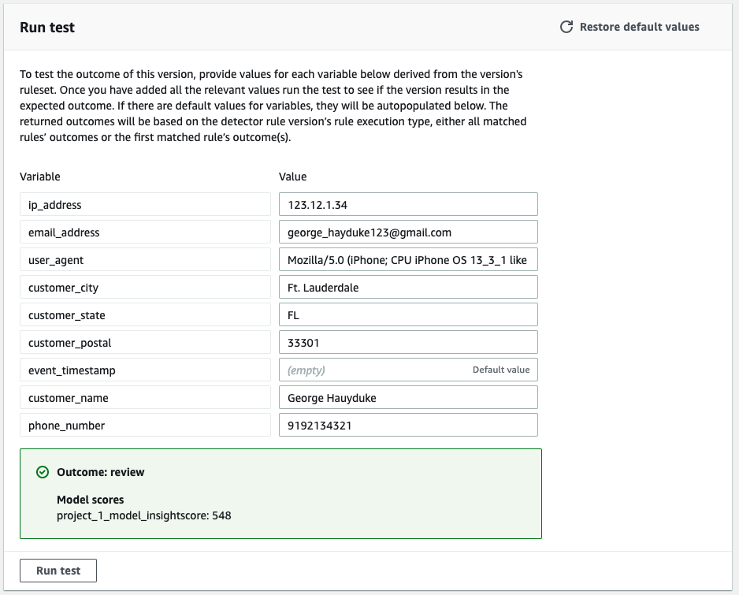
Publish Detector
Now that you’ve tested your detector and verified your rules and model are behaving as expected we are ready to publish it. This will make your detector available to run predictions with.

Step 7. Make Predictions
Lets review where we are at, we have:
- Trained, evaluated and deployed a model:
- Created a detector and added our model to it.
- Authored rules, ordered them and added them to the detector.
- Tested our detector
- Finally we published our detector.
At this point we are ready to start making predictions using the GetPrediction API. Lets shift to our SageMaker instance and upload the prediction notebook.
Once loaded simply follow the directions in the notebook. At the end of our notebook you should have a file with 5k predictions that you can then analyze. It should look something like this:
| score | status | outcome | event_date | email_address | ip_address | is_fraud | customer_name | customer_city | customer_postal | customer_state |
|---|---|---|---|---|---|---|---|---|---|---|
| 4 | 200 | [‘approve’] | 2020-04-11 | synth_tmorton@yahoo.com | 84.138.6.238 | 0 | Brandon Moran | Meganstad | 32733 | LA |
| 12 | 200 | [‘approve’] | 2020-04-11 | synth_oscott@yahoo.com | 194.147.250.63 | 0 | Dominic Murray | Christinaport | 34319 | MN |
| 3 | 200 | [‘approve’] | 2020-04-11 | synth_aoliver@gmail.com | 192.54.60.50 | 0 | Anthony Abbott | Donaldfurt | 32436 | WA |
| 653 | 200 | [‘review’] | 2020-04-11 | synth_clewis@gmail.com | 169.120.193.154 | 0 | Kimberly Webb | Williamburgh | 34399 | AL |
| 52 | 200 | [‘approve’] | 2020-04-11 | synth_katherinedavis@hotmail.com | 192.175.55.43 | 0 | Renee James | East Markland | 33690 | IL |
| 992 | 200 | [‘block’] | 2020-04-11 | synth_deborahlevy@gmail.com | 192.175.49.125 | 1 | Marvin Rice | North Nathanielland | 32023 | PA |
Step 8. Integration with AWS Lambda & REST API
AWS Lambda is an event-driven server-less computing platform. AWS Lambda automatically runs your code without requiring you to provision or manage servers. Just write your Lambda function and trigger it’s execution. In our case we are going to trigger our lambda function from a REST call. This allows us to integrate our Fraud Detector with other systems to stop fraud in real-time, regardless of platform. Here is the recipe:
- Create a AWS Lambda Function to call Fraud Detector’s get_prediction function
- Create a REST API using Amazon API Gateway to trigger the Lambda function
- Test your API
- Deploy it
Create a AWS Lambda Function
to create a lambda function, fire up Lambda in the console, create a new Lambda, select author from scratch, name your lambda newAccountFraudLambda, and select Python 3.7 for the run time environment.
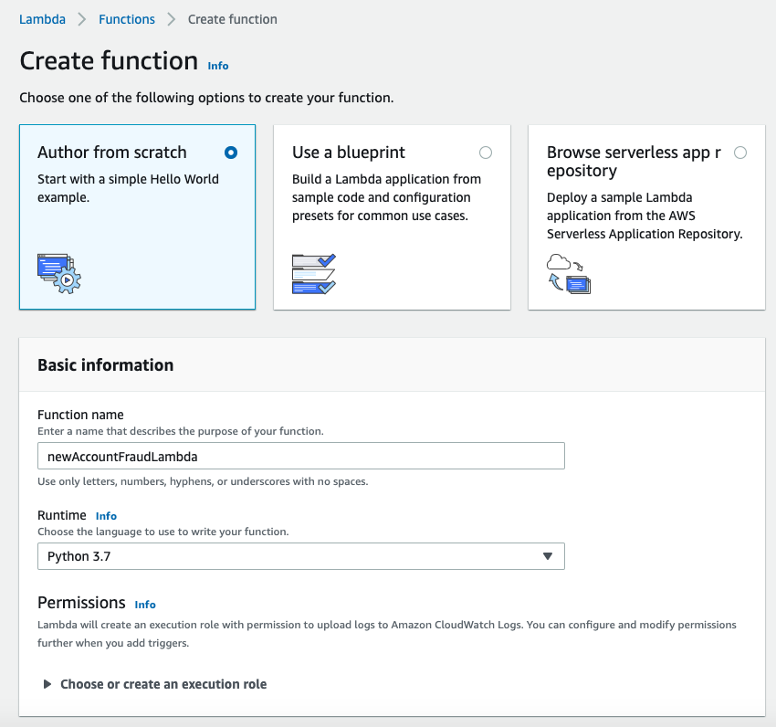
The copy the following code into your new lambda function.
import json
import boto3
import uuid
client = boto3.client("frauddetector")
DETECTOR_NAME = "project_1_detector"
DETECTOR_VER = "1.0"
MODEL_NAME = "project_1_model"
MODEL_VER = "1.0"
def lambda_handler(event, context):
id = uuid.uuid4()
try:
pred = client.get_prediction(detectorId = DETECTOR_NAME,
detectorVersionId = DETECTOR_VER,
eventId = str(id),
eventAttributes = event)
score_id = pred['modelScores'][0]['modelVersion']['modelId'] + '_insightscore'
event['prediction_id'] = str(id)
event['detector_outcome'] = pred['outcomes']
event['model_status'] = pred['ResponseMetadata']['HTTPStatusCode']
event['model_score'] = pred['modelScores'][0]['scores'][score_id]
return {
'statusCode': 200,
'body': event
}
except:
pred = client.get_prediction(detectorId = DETECTOR_NAME,
detectorVersionId = DETECTOR_VER,
eventId = event['email_address'],
#eventId =str(id),
eventAttributes = event)
event['prediction_id'] = str(id)
event['detector_outcome'] = '-- failed --'
event['model_status'] = pred['ResponseMetadata']['HTTPStatusCode']
event['model_score'] = -1
return {
'statusCode': pred['ResponseMetadata']['HTTPStatusCode'],
'body': event
}It should look something like this.

Test your Lambda
Configure a Test Event. Call your test POST
Copy the following into your test event and select Save.
{
"ip_address": "1.118.212.96",
"email_address": "synth_richardmcmillan@yahoo.com",
"user_agent": "Mozilla/5.0 (compatible; MSIE 5.0; Windows NT 4.0; Trident/5.1)",
"customer_city": "Samuelside",
"customer_state": "NY",
"customer_postal": "33560.0",
"event_timestamp": "nan",
"customer_name": "Charles Jacobson",
"phone_number": "(555)117 - 1006"
}It should look something like this

Now Test your Lambda Function!

Oops!!! We need to attach Fraud Detector’s getPrediction action to our Lambda function.
Click permissions and this will bring you to where you can attach Policies to your lambda function.

I created a policy called “lambdaGetPrediction” which just has Fraud Detector’s getPrediction action,

and then attached the policy to my lambda function
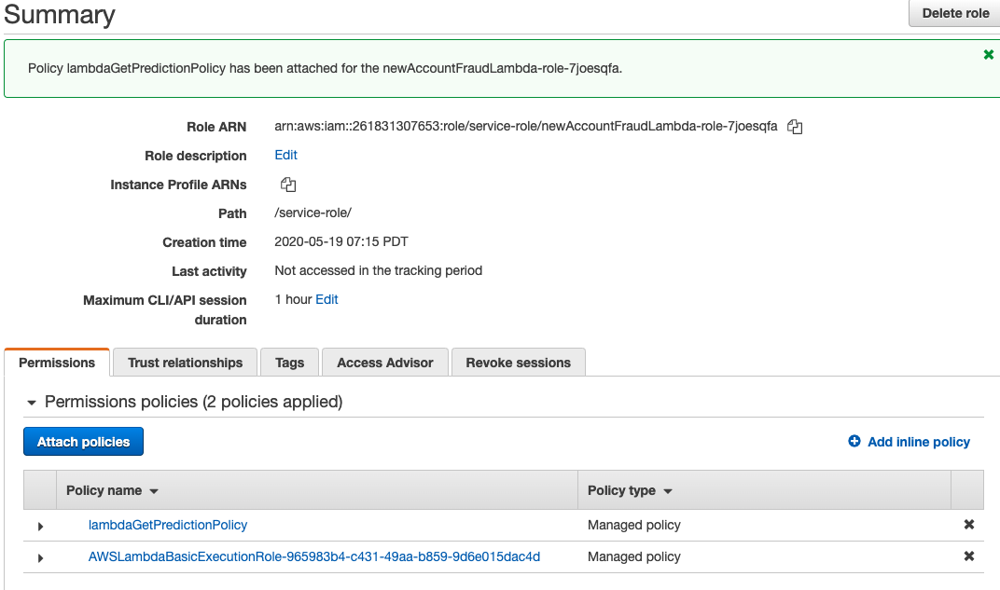
Now we are really ready to test!!
Select Test.
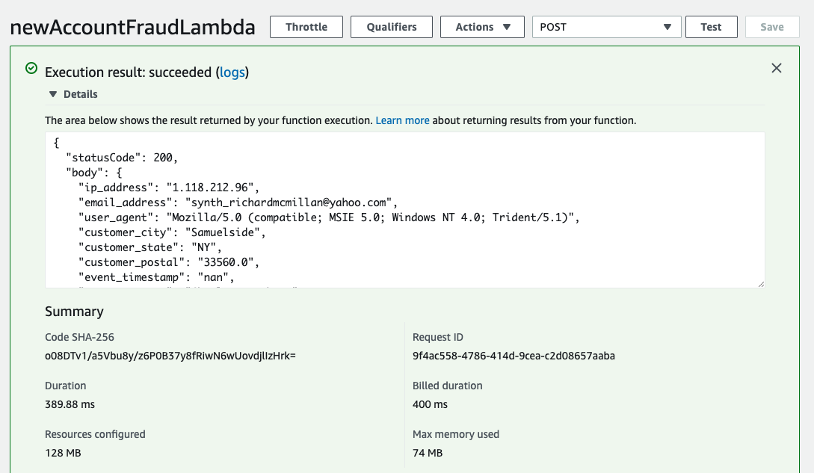
BAM! we have a successful test… now on to creating an API.
Create REST API with Amazon API Gateway
Amazon API Gateway is a managed service that makes it easy to create, publish and secure APIs. In this case, the API is gong to act like a “front door” to our Lambda function. Once created, our new API will enable real-time two-way communication between applications. API Gateway handles all the tasks involved in accepting and processing our concurrent API calls at scale.
note: you can also trigger Lambda functions from a wide variety of events including landing an S3 file in a bucket.
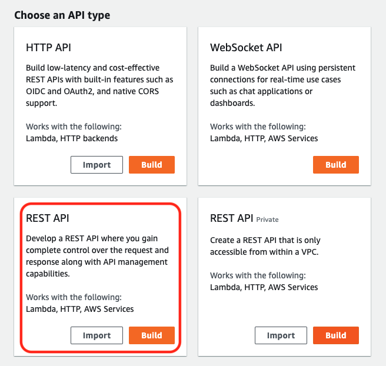
Next we need to name our API. In this case I named mine newAccountFraudApi
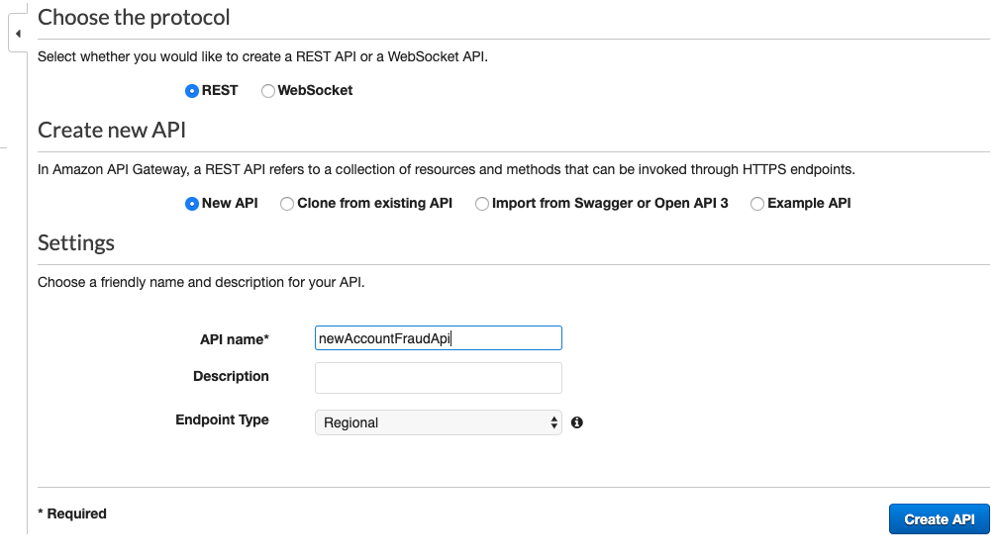
Next create a resource named newaccount, add the POST method and finally link your API to your Lambda Function newAccountFraudLambda. We use a POST method rather than a GET method simply because it’s easier and more secure. GET parameters are passed via URL, they are easily exposed in server logs and browser history. POST just puts the information in request message body.

At this point your API should look something like the following. Essentially this is the mapping of your call from request to lambda to response.
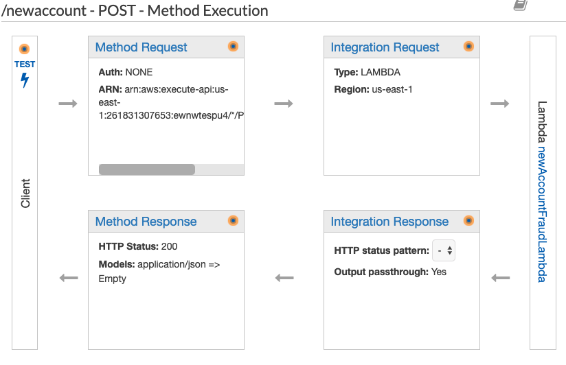
Test your REST API
Next we want to test our API, to do this we simply click Test
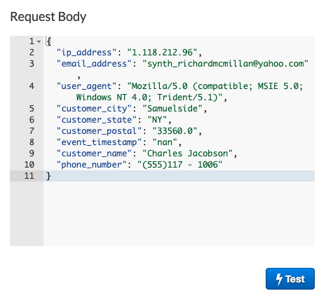
Add the following to the Request Body, since we are doing a POST rather than a GET we can just jam our JSON in the body.
{"ip_address": "169.120.193.154",
"email_address": "synth_clewis@gmail.com",
"user_agent": "Mozilla/5.0 (Macintosh; PPC Mac OS X 10_10_9; rv:1.9.3.20) Gecko/2016-11-26 21:58:43 Firefox/13.0",
"customer_city": "Williamburgh",
"customer_state": "AL",
"customer_postal": "34399.0",
"event_timestamp": "2020-04-11 17:48:52",
"customer_name": "Kimberly Webb",
"phone_number": "(555)588 - 4426"}Here’s the response back from our Lambda call. You can see in the response we sent back the event with a prediction_id, detector_outcomes, model_score and status. Of course you can modify your lambda function’s response to be really anything your application needs.

Deploy your REST API
The last step is to deploy your API, this makes a callable URL for your REST API. To do this you simply create a “stage”, I created one called PROD and deployed my API to it. You’ll end up with a URL like this. https://ewnwtespu4.execute-api.us-east-1.amazonaws.com/PROD/newaccount
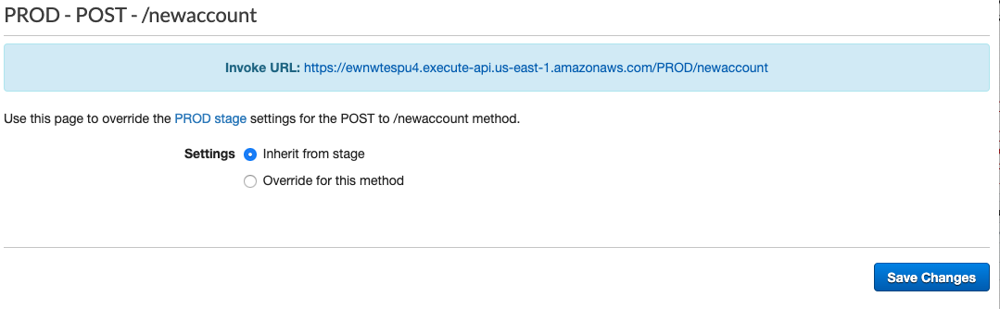
Curl your REST API
cURL is a command line tool which can be used to call an API from command line. I’m lazy so i created a file with my prediction record, called record.txt
record.txt just contains the following
{"ip_address": "169.120.193.154",
"email_address": "synth_clewis@gmail.com",
"user_agent": "Mozilla/5.0 (Macintosh; PPC Mac OS X 10_10_9; rv:1.9.3.20) Gecko/2016-11-26 21:58:43 Firefox/13.0",
"customer_city": "Williamburgh",
"customer_state": "AL",
"customer_postal": "34399.0",
"event_timestamp": "2020-04-11 17:48:52",
"customer_name": "Kimberly Webb",
"phone_number": "(555)588 - 4426"}I then use –data option to pass my text file to my REST service
Here is my curl command:
curl –data @record.txt https://ewnwtespu4.execute-api.us-east-1.amazonaws.com/PROD/newaccount
and my response:
{"statusCode": 200,
"body": {"ip_address": "169.120.193.154",
"email_address": "synth_clewis@gmail.com",
"user_agent":
"Mozilla/5.0 (Macintosh; PPC Mac OS X 10_10_9; rv:1.9.3.20) Gecko/2016-11-26 21:58:43 Firefox/13.0",
"customer_city": "Williamburgh",
"customer_state": "AL",
"customer_postal": "34399.0",
"event_timestamp": "2020-04-11 17:48:52",
"customer_name": "Kimberly Webb",
"phone_number": "(555)588 - 4426",
"prediction_id": "b483a095-2823-43ad-9bb3-912c04678ae8",
"detector_outcome": ["review"],
"model_status": 200,
"model_score": 653.0}
}Conclusion
Congratulations, you have made it through the hands on tutorial and gone “end to end” with Amazon Fraud Detector. You’ve done the following:
- Trained and Evaluated a Fraud Detector Model
- Created a Detector and Authored Rules
- Tested and Published a Detector
- Made predictions on new data
- Created and Tested a Lambda function for integration with other AWS services
- Created and Tested your own REST API so that your Detector can be called from anywhere
What’s next? Your next step is to creating your own Proof of Concept with Fraud Detector!